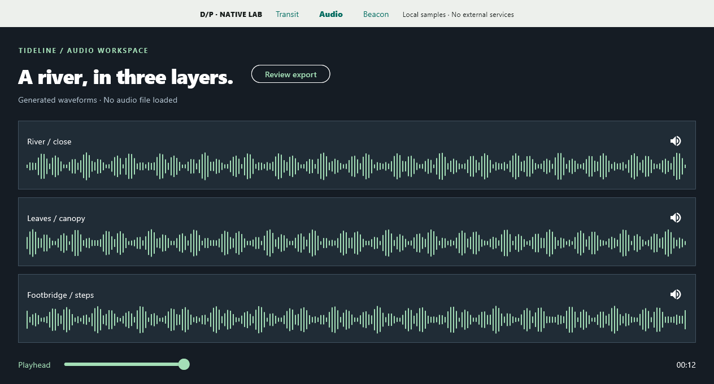

DESIGN TO PRODUCT / SHOWCASE
12 distinct directions.
Working studies across web, apps and game UI.
BEYOND THE BROWSER
A real runtime.
A narrower claim.
Windows Flutter evidence covers transit selection, an audio workspace and a playable signal puzzle. Android and iOS remain unverified.
Read the native test record ↗
Research and review
Original browser studies with local sample data. Reviewed by independent model critics; different briefs and budgets mean this is not a controlled A/B study or human usability research.
Typography and composition · Imagery and art direction